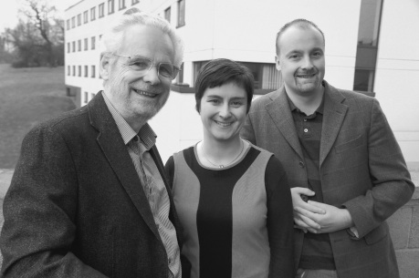
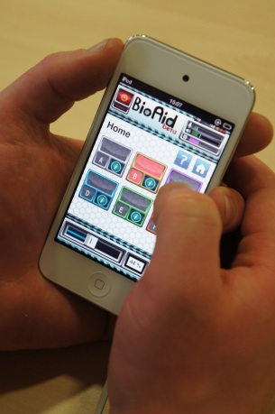
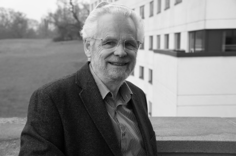
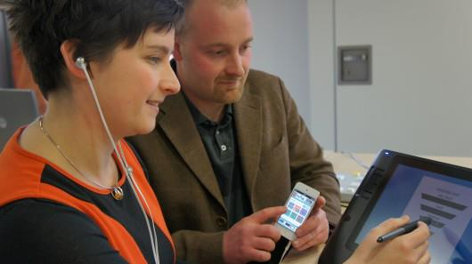

Smart Phones Meet Hearing Aids

A mobile phone contains all of the components needed to build a hearing aid. It contains a microphone, a loudspeaker and, in between, all the necessary processing power. Already, it is possible for anyone who owns an internet-connected mobile phone to download simple hearing aid applications (or ‘apps’) at a cost of only a few Euros. Is this a passing fad or the beginning of a hearing aid revolution?
Of course, such apps are less than ideal for many reasons. A mobile phone is expensive, heavy and inconvenient compared to a regular hearing aid. The earphones supplied by the manufacturer are rarely comfortable enough to wear all day. An aid on a mobile phone is almost certainly monaural, because a single microphone and not two are used in headsets. Thus, no localisation cues are offered. The signal processing software is often crude compared to the best commercial aids. Moreover, the user has had no hearing test and has no professional support to help find the best settings. Consequently, the best professional advice must be to ‘stay away’.
But, what about the future? Many of these problems are purely technical and, as we know, modern technology has a habit of solving problems even before the public knows that one exists. Phones get lighter every year. Recently, most of the mobile phone functions that might be used in a hearing aid have been built into lighter and cheaper music players such as the Apple iPod Touch. Comfortable, high-fidelity earpieces are already available for separate purchase. Bluetooth and wireless will soon replace the wires linking the phone to the earpieces and remote microphones are a possibility. Wristwatch-size mobile phones are already available. The problem of changing small batteries with large fingers is already solved because a phone can be charged up overnight simply by dropping it on a charging dock or, even better, using the latest wireless charging solution.
What is more, phones and music players have all the necessary processing power to host automated hearing tests. The results could be relayed automatically to a professional adviser. The advisor could even be a robot who could download over the internet the recommended hearing aid settings. If the advisor is, in fact, a robot, there is no reason why it cannot exist simply as software on the users own equipment. The technical problems will surely be solved.

Cost will also be a factor in encouraging the spread of this kind of aid. Why pay thousands of Euros for a hearing aid when one is available for a few Euros on a mobile phone? More to the point, why should governments pay billions for hearing aids for their citizens when a cheaper alternative exists, particularly if it can be hosted on a device that the patient already owns? A few million Euros invested in refining an alternative based on a mobile phone or music player might be a better use of tax-payers money. It must also be remembered that most of the world’s population has little or no access to decent health-care. They have no access to an audiologist nor could they afford a hearing aid even if one was prescribed. Nevertheless, people in under-developed economies do have access to mobile phones because landline communication systems are so unsatisfactory. Unwanted phones will always be readily available for use by elderly relatives, if not, they will soon be coming by the truckload from the industrialised countries.
Our research group became involved in the development of an ‘aid on a phone’ out of necessity. We had what we thought was a novel design for a hearing aid but there was little chance of having it made up as a conventional hearing aid for a number of reasons. We could test it in the laboratory using a laptop computer but, as outsiders, we were not going to convince a hearing aid manufacturer to adopt it. Such a step would require a considerable financial investment both to convert the design into digital hardware and to resource the marketing and training effort required to persuade dispensers to recommend it. Making a case would be difficult even if our new ideas were a small improvement to an established design. However, we wanted to do something much more radical. It was then that we realised that we could move directly into production using a mobile phone as a portable experimental hearing aid. This would allow us to demonstrate the viability of the concept and learn from the experiences of people all around the world, not just in our laboratory. This is not a new idea and we are aware that many in the industry are alert to the new opportunities that the technology is creating.
From inside our group the initial proposal came from Nick Clark who had recently joined us after finishing his PhD research at the MRC Institute for Hearing Research at Nottingham University. Using his programming expertise, he developed and refined an app suitable for uploading to the iTunes Store. An implementation of our hearing aid algorithm is available for recent iOS devices, i.e. iPhone 4s, iPhone 5 and latest iPod touch via the app store. Download ‘BioAid’ today free of charge.
| Dr. Nick Clark |
As a result of our involvement, we have become aware that the electronic revolution of hand-held internet-connected devices could have wide implications for hearing impaired users and for the hearing aid industry generally. These implications extend far beyond a cheap competitor to current commercially-available hearing aids and reach out to many new applications to benefit the hearing impaired and to provide a platform for rapid development of new ideas by people outside of the major manufacturers’ research laboratories. But first, we will describe how it has affected our own research.
Initially, the research was not concerned with hearing aids at all but with the construction of computer models of how hearing works at a physiological level in the auditory periphery. The basic model consisted of a series of equations that simulate the response of the stapes, the basilar membrane (BM), outer and inner hair cells (OHCs, IHCs), the auditory nerve as well as efferent activity such as the acoustic reflex and the medial olivo-cochlear (MOC) system. Eventually, the models became sophisticated enough and reliable enough for us to simulate a number of psychophysical phenomena such as thresholds, masking and simple aspects of speech recognition.
As the models matured we were able to take matters a step further to simulate hearing impairment. We were able to use the model to simulate the hearing impairments that might be expected if individual elements of the physiological processing chain such as OHCs or IHCs failed to function normally. These models were designed around measurements we had made on individual hearing-impaired volunteers. We called these individualised models ‘hearing dummies’ and the aim was to gain insight into the physiological pathology that might explain different patterns of sensorineural hearing loss.
While doing this we were stimulated to generate ideas of what would be required in a hearing aid to compensate for the different patterns of impairment that we had modelled. Our thinking led us to some design principles that were different in important respects from hearing aids that are currently available. Our design was biologically-inspired in the sense that it was based on principles that we could see operating in normal human hearing. Two of these principles seemed to be very important we thought that they deserved a place in the design of any hearing aid. These were 1) instantaneous compression of the BM response and 2) slow efferent suppression of BM activity in response to changes in ongoing environmental sound levels. Dynamic compression with either long or short time constants has, of course, long been a feature of modern hearing aid design but the compression observed at the level of the BM in animal studies is qualitatively different. BM compression has no obvious time constant. It is virtually instantaneous and similar in nature to ‘clipping’ but without the unwanted distortion products. When the OHCs fail for whatever reason, this compression disappears along with the sensitivity to quiet sounds. Ideally a hearing aid should be able to compensate for this, providing among other things protection from sudden very loud sounds. When the compression is instantaneous, the rapidity of onset of the sound presents no problem to normal hearing. If this compression is absent in hearing loss, sudden sounds create a number of problems for the listener in terms of excessive masking and discomfort. Twenty years previously, we had designed a dual resonance nonlinear (DRNL) system that successfully simulated this compression with minimal distortion and now we thought that the principle could be built into a hearing aid and coupled to a multi-channel amplification system.
|  | Prof. Ray Meddis |
The second principle is based on efferent suppression of the BM through the MOC system. This is a topic of relatively recent interest in auditory science but it has come to be recognised as an important mechanism for helping us to cope with noisy environments. We were able to demonstrate the potential importance of efferent suppression in a study using our hearing dummies as a front-end to an automatic speech recognition system. The study showed that the identification of words presented in a noisy background improved substantially when the efferent feedback suppression was enabled compared to when it was switched off. This convinced us that the same principle should be built into a hearing aid.
The MOC efferent system has some similarities with the automatic gain control (AGC) used in conventional aids in that it suppresses the response in proportion to the background sound level averaged over a period of time. Nevertheless, there are important differences. Most obviously in biological hearing, the time constants are determined by neuronal interconnection and. The feedback regulating the response is also delayed by more than 10 milliseconds. This feedback arrangement contrasts with the feed-forward implementation of many AGC implementations in hearing aids. Furthermore, an instantaneous nonlinear compression occurs between the suppression and detection stages of the biological feedback network, making the response more complex than that of a simple AGC.
The MOC exerts its effect through the OHCs and will be ineffective when a hearing loss is the result of OHC dysfunction. The benefits experienced by normal listeners will therefore be lost. However, efferent suppression is part of a feedback loop which means that any dysfunction anywhere in the loop will affect its performance. For example, any disorder of the IHCs or auditory nerve will also impact on its functioning. As a consequence, the unmasking benefits of this system will be denied or reduced consequent upon almost any disorder of the auditory periphery. In order to restore the benefits enjoyed by listeners with normal hearing, our philosophy is to mimic this feedback system in a hearing device. A prototype of this hearing device was first built by Nick Clark on a laptop linked by a long cable to an empty satellite hearing aid (kindly supplied by Phonak). The guinea-pig listener was, of course, restricted to a seat in front of a loudspeaker used for testing. This was not ideal, but it was a useful start.
As often happens when innovating, the development of the design proceeded in fits and starts with sudden insights and radical rebuilding of the system at frequent intervals. Initially it was thought that instantaneous compression would be useful only for limiting the dynamic range of the device. However, it quickly became obvious that it was also important for restoring normal growth of loudness right from the lowest up to the highest sound intensity. In other words we were making quiet sounds louder and loud sounds quieter. Making loud sounds quieter to the listener was possible, of course, only if we used an occluded fitting to prevent the direct sound path from overwhelming the hearing aid output. In this way we realised that BioAid was being used as a hearing protection device (a “partly transparent” earplug) that would allow patients with mild hyperacusis to tolerate loud sounds. Given that intolerance of loud sounds is a common accompaniment of hearing loss, this was judged to be a useful benefit of the new compression arrangement.
A similar principle was at work when the efferent process was activated in BioAid. As the background noise rises, the gain is gradually reduced to keep the output at a manageable level. After all, when the background is noisy, quiet sounds are masked and strong amplification serves only to make the noise more annoying. High gain offers no benefits in noisy situations. By slowly adjusting the gain to match the ambient sound intensities, the signals of interest are kept away from the extremes of the dynamic range. Because the system adjusts slowly, it complements the instantaneous compression; the former deals effectively with ongoing noise and the latter deals with sudden acoustic events.
Sounds processed in this way might sound odd to someone with normal hearing but that is because this gain adjustment is already happening naturally for them. This is not the case for hearing-impaired listeners, because this processing may be absent altogether. At high intensities, an occluded fitting is necessary to get appropriate protection but it will not be needed at all times. An ideal arrangement would be to use an open fitting most of the time when very loud sounds are not expected but swap to a closed fitting when going to a party or restaurant. In a noisy environment an occluded fitting will be less irritating and offer important compensating benefits.
It was convenient during the development stage to be able to modify BioAid by simply changing the software on the laptop computer. The same was true later when it was implemented on the mobile phone platform. Indeed, the possibility of rapid implementation and modification may well prove to be the most important and lasting contribution of the new technology to hearing aid design. Implementing a new design is currently a slow and costly business. With a mobile phone or a music player, a scientist can be creative and make this creativity publicly available. This can only be of benefit to the consumer in the long run.
The combination of Internet connectivity and the capacity for rapid reprogramming could also offer early benefits in the clinic. When a customer complains about his hearing aid, a visit to the dispenser’s office is needed and specialist equipment must be used to test and reset the parameters of the hearing aid. In future, this could be done with a telephone consultation followed by a download over the Internet of alternative settings for the hearing aid.
Sometimes a full implementation of the ideal hearing aid settings is delayed gradually to allow the patient to become familiar with the new sounds. Again the adjustments could be made at intervals by the dispenser over the Internet. More radical still, the customer could be given complete personal control over the parameters. Many hearing-impaired audio engineers would really like that!
If an individual downloads a hearing aid without professional support, how can an appropriate fitting be chosen without a hearing test? Faced with this problem there are 24 preset parameter sets into the app (divided in six basic audiogram shapes) and the listener is invited to choose the one that sounds best. A simple tap of an icon on the screen causes BioAid to transition rapidly from one fitting to another. The parameter sets were based on various types of sensorineural hearing loss. We were surprised at how quickly individuals gravitated spontaneously towards the fitting that we would have recommended on the basis of their audiogram.
Of course, this kind of fitting procedure is not ideal. A hearing test administered by a trained professional who supplies a modern hearing aid by a reputable manufacturer must be better. However, this may not always be possible, particularly in economically underdeveloped countries.
Even in wealthy countries, a potential user may simply be toying with the idea of seeing a professional but wants to experiment with the possibilities of a hearing aid. If a favourable experience speeds up his first visit to a professional, then so much the better.

The six basic settings sets were developed in the laboratory by Wendy Lecluyse assisted by enthusiastic volunteers with different types of impairment. These included flat-loss, high-frequency loss, ski-slope and three varieties of cookie-bite audiograms. The most effective technique for discovering the best fitting parameters was to use the ACALOS procedure developed at Oldenburg University by Thomas Brand for assessing growth of loudness. The parameters of BioAid were adjusted until a patient’s growth of loudness function could be made similar to that obtained with an unaided normal-hearing listener. For each of these parameter sets, four further variants were established with increasing amplification to reflect different degrees of severity of hearing loss.
| Dr. Wendy Lecluyse |
This approach offers a solution for a problem often experienced by professionals such as doctors, nurses, social workers and even audiologists in hospitals who wish to communicate with patients who require but, for some reason, do not have an appropriate hearing aid. It may not be practical to arrange a hearing test nor to wait for the time to supply and fit an aid. In such cases a mobile platform such as the one described with a pair of comfortable headphones could prove to be a very useful way to open a temporary communication channel with the patient. The ability to run through a series of alternative fittings in a few minutes to find the clearest response would make it a very flexible assistant for use with many different clients. In such cases, the inconvenience of headphones need not be a problem, for example when sitting in a hospital bed.
A hearing aid algorithm on a mobile phone could be linked to the telephone itself to give better audibility. While handset manufacturers do not make this easy at present, such an arrangement would be more flexible than an attachment to a telephone landline at home. Of course, the telecommunications work both ways and mobile phone technology is ideal for collecting information about the usage of an aid, such as total hours of usage per day and preferred aid setting. Some aids already collect information of this type, but the combination with a mobile phone makes it possible to send the information automatically to the dispenser. When users are given free choice over settings, it would be interesting to study their preferences from a scientific point of view. This is currently difficult to achieve. We also know little about the typical listening environments of our patients but it would be easy to collect such data using an appropriate app that accumulated and reported back information about environmental sound levels and component frequencies.
Using a mobile platform gave us much freedom about the type of signal processing. For example, we wanted to process our signals in the time domain because implementing instantaneous compression is only really possible using this approach. In discussions with manufacturers it quickly became clear that there is an industry-wide preference for working in the frequency domain. It was obvious that our approach would not be popular in the industry for that reason alone. However, using even the cheapest viable platform, our signal processing approach used only a small fraction of the available CPU resources. It was also possible to achieve latencies of only 7 ms for a multi-channel system! This leaves lots of room for expansion.
From a scientific point of view, our project generated many new insights but one is particularly worthy of mention and this concerns the nature of auditory frequency-selectivity. This is normally referred to under the heading of ‘tuning curves’ which are thought to be narrow in normal hearing and much broader in impaired hearing. As the word ‘tuning’ suggests, we normally talk about this process in terms of the passive tuning of a linear electrical circuit or simple harmonic motion. It is natural to assume that this tuning cannot be restored once damaged because it is an internal component of the system. However, this may be based on a fundamental misunderstanding because the auditory system is not linear but highly compressed and it contains a number of feedback loops that complicate the interpretation of so-called tuning curves. Tim Jürgens identified this possibility when visiting our laboratory on a one year visit from Oldenburg University.
 |
Dr. Tim Jürgens |
He began by using a computer model of impaired hearing developed earlier by my colleague Manasa Panda. Tim showed that the impaired model did, in fact, have wider tuning curves than an unimpaired model. Later he re-tested the computer model when it was coupled with BioAid as its input. We were all surprised to find that the tuning curves were predicted much narrower when BioAid was switched on. Somehow the reintroduction of instantaneous compression and efferent suppression had changed the ability of one tone to mask a second tone of a different frequency and, in this one situation at least, had altered our estimate of the models frequency selectivity.
Naturally, we quickly tested BioAid with the same patients whose data had been used to generate the impaired computer models. We were delighted to find that the same result could be demonstrated in our live listeners. If this can be replicated in other patients and in other situations, it could be an important result giving new insight into the nature of frequency-selectivity in both normal and impaired listeners. If frequency-selectivity is partly controlled by compression then a suitably designed hearing aid can, in principle, restore it.
Obviously we are excited by our new design but how can we prove that it is as good as commercially-available aids? Researchers at Oldenburg University are already engaged on a project aimed at putting different algorithms on a common computer platform for the purpose of comparison and BioAid will be part of it. Mobile platforms carrying a range of algorithms could provide an opportunity to allow the consumer to try out alternatives before making a purchase. Customers could compare and contrast different industry designs by switching from one to another at the touch of an icon. Manufacturers are not expected to sign up cheerfully to such a project but government agencies and health insurance companies should at least be tempted by the idea. It would be a pity if hearing aid purchase decisions continued to be influenced more by marketing hype or franchise arrangements than measurable patient benefit. The technology is opening up many new opportunities if only we wish to take them.
